来源：https://www.feishu.cn/docx/CGZ4dZq4ZoSFT4xUmFecNpk4nNe
标题党了!哈哈
最近在研究短视频带货+无人直播带货,然后搞号的过程中,在巨量百应后台,刷到了创意中心
其中有两个模块吸引了我的注意
(btw,刷完这里我才发现,带货短视频上限竟然能这么高,一条视频十几万,几十万的收入...
很明显这里有很多矩阵号,模板化的内容批量的产出...)
一个是爆款视频,能找到各个行业,不同等级作者,近期的非常实时的最新带货效果最好的短视频.
这个是比抖查查蝉妈妈这些第三方要更准确的行业优秀爆款视频库.
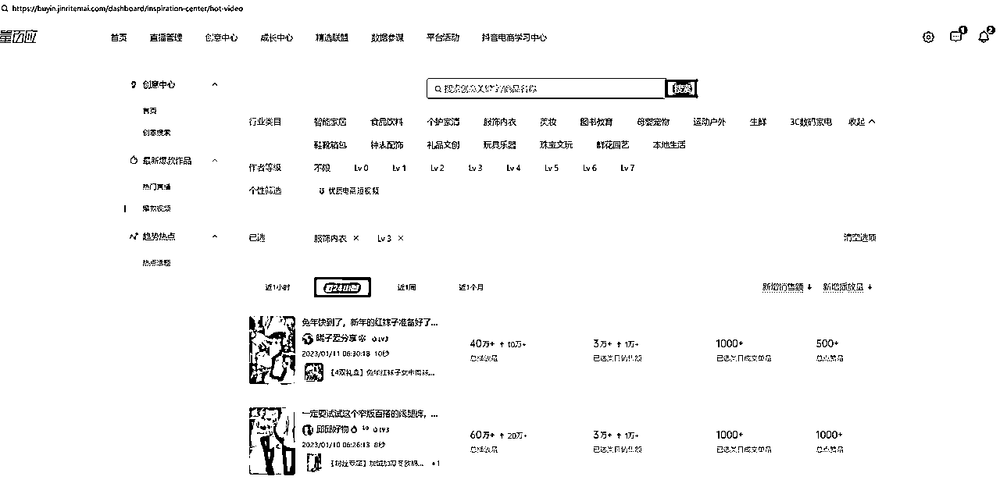
一个是创意搜索.这里可以按照关键词/商品来搜索近期的,非常实时的,同类竞品对标短视频.
对于上不了热榜的来说,这里更容易找到同行的东西.
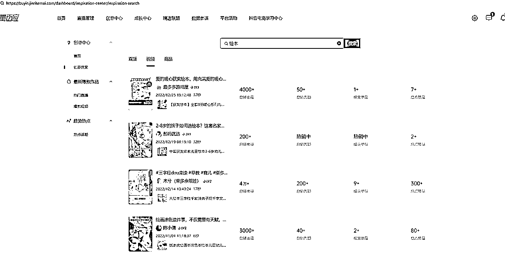
要是我能把这些视频全下载下来,数据全采集下来,优秀的脚本我存起来
不管是ban,还是自己做剪辑,要抄要学,是不是挺有作用的.
对标对标,这里上榜的,出成绩的,最新的,不就是最好的对标吗?
好的脚本大概率是不会过时的,一个脚本模板,改改文案换个产品推,成功率大概也比瞎原创要好一点吧.
好记性不如烂笔头,不如全部下载保存起来吧.
正好我懂点rpa,会用影刀这个工具,我就花了一周空余时间做了两个小工具.
巨量百应Buyin创意搜索
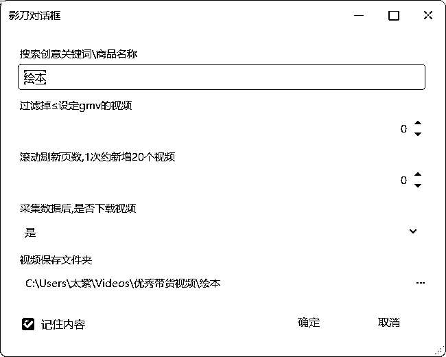
点击确定开始运行,不刷新页数,1页下载完就22秒左右吧
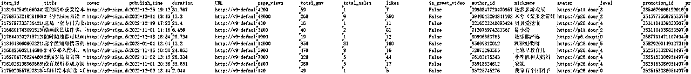
图片可以放大,该有的都有了,想要基于数据再做分析也可以的.
常用的就是找total_gmv高的,降序,就能找到同行近期销售额最高的视频了.
剩下就到自由发挥时间了.
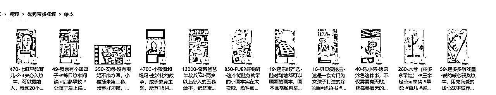
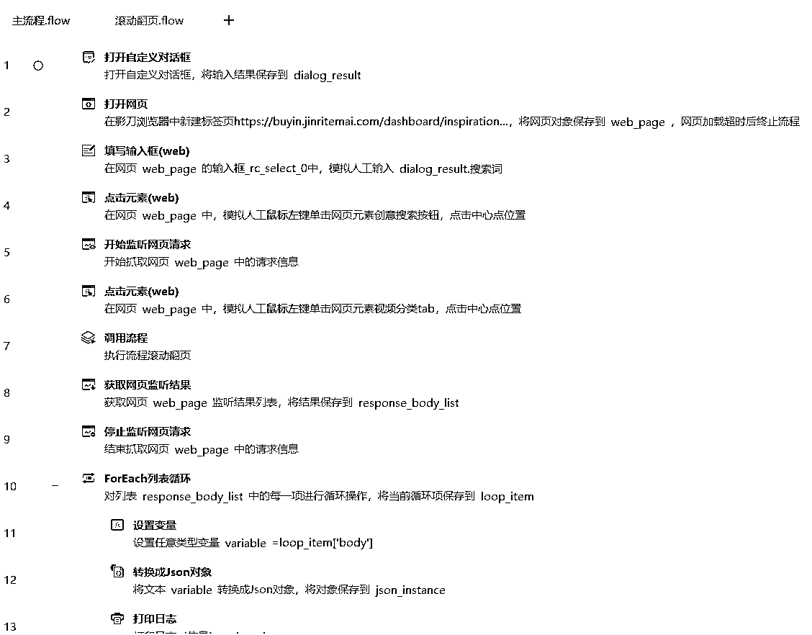
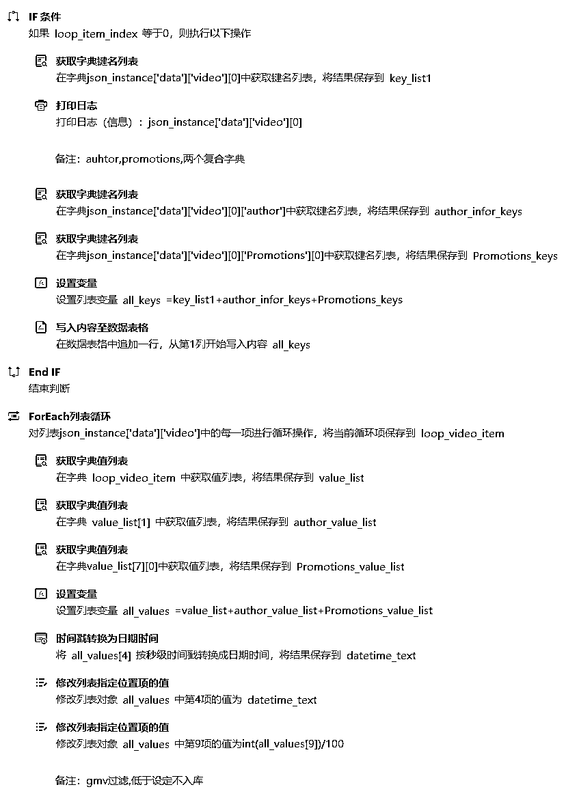
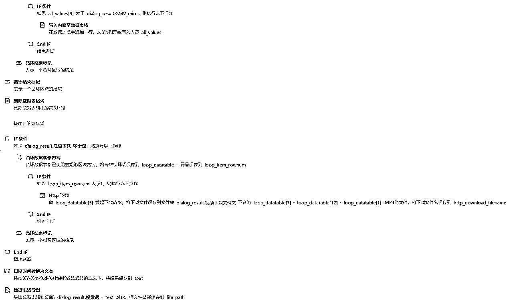
巨量百应Buyin爆款视频
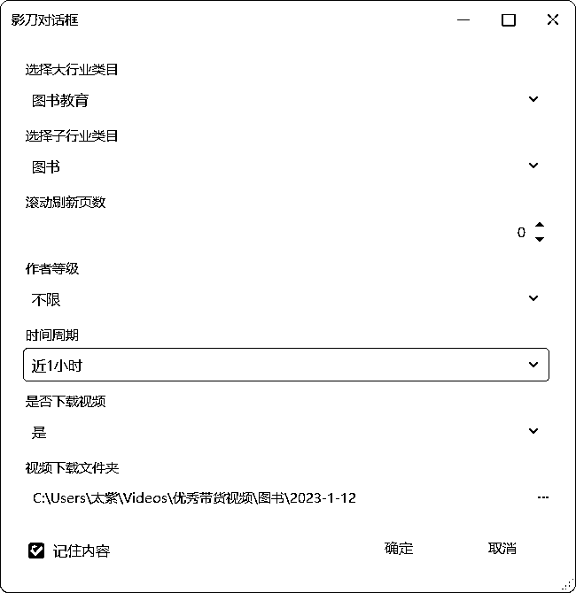
点击确定开始运行,不刷新页数,1页下载完就55秒左右吧
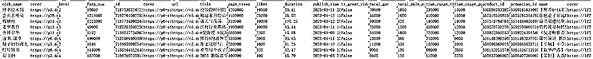
采集的数据,是比页面显示出来的更精准的,因为页面显示做了约数简化.
这里,我的思路是找那种,粉丝量少,但是销量高的视频,做参考
这种黑马小达人更是我们小达人适合学习的对象,毕竟大达人都是有粉丝基础加成在的,销量天然会高一点.
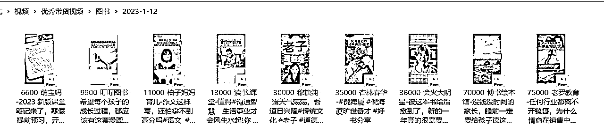
视频下载下来,可以用飞书妙记,语音转文字,你懂得.
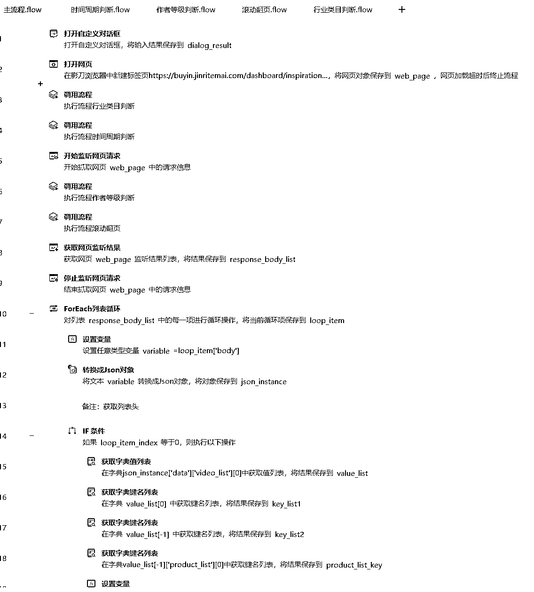
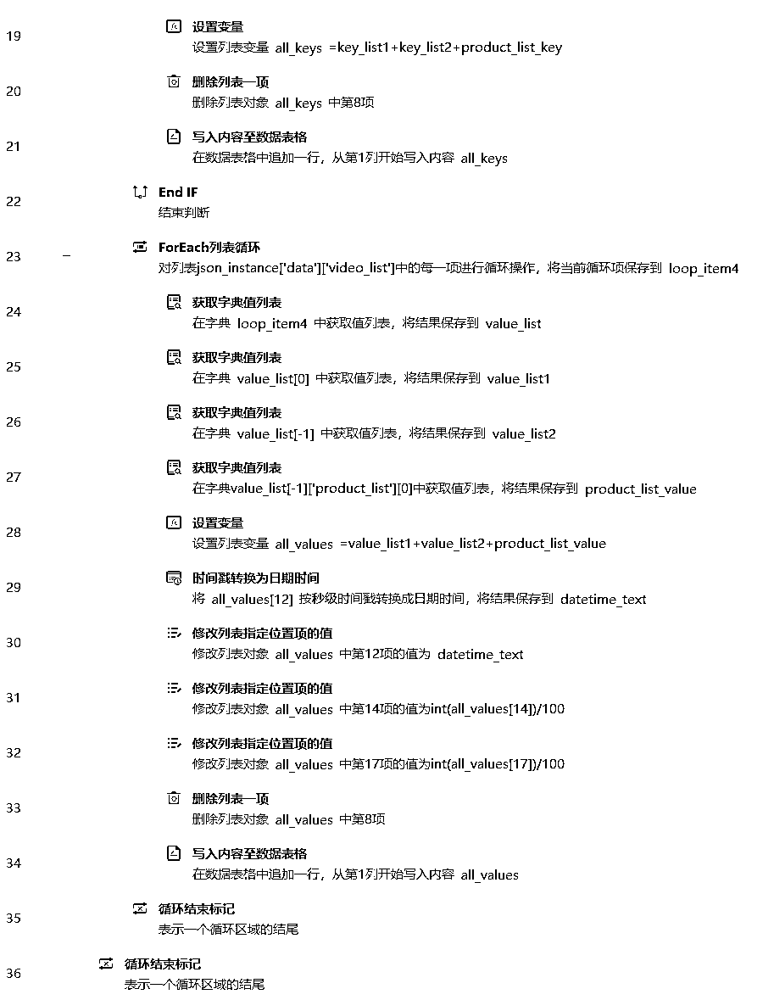
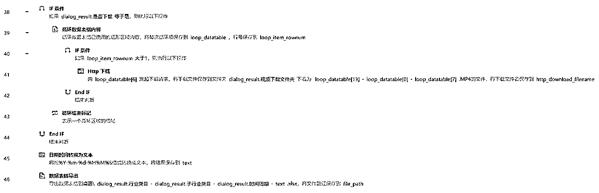
rpa是个好工具,之前我分享过后羿采集器做知乎相关采集的内容,后羿采集器也是个好工具.
rpa更自由吧,只要你有想法,加上一点点的编程思维,即使你不是专业的程序员,也能写出来能用的脚本.
我不是程序员,最多算个半吊子的产品经理,上面的源码可能有写的不好的地方,欢迎指出...
我还写了其他的一些自用的脚本,也是自己时不时用到的.
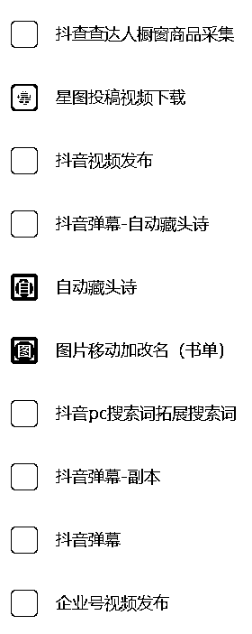
我还自己用影刀做了个无人直播机器人,抓取直播间弹幕-匹配关键词-自动音频回复-自动视频回复.
跑通了,不过不太好用,脚本执行的时候电脑就不能操作了...
所以我还是找程序员朋友另外开发了无人直播工具.能实现上面提到的功能,beta版已经出来了.
这是我的影刀邀请注册链接,没收益的,就是薅他90天创业版的权限
我现在脚本分享不出去给其他人,试下创业版行不...感恩互惠~
https://www.winrobot360.com/share/activity?inviteUserUuid=5cd282a5-32eb-426f-ad50-4b3eaa9edc70
玩rpa的,短视频带货的,直播带货的,欢迎和我交流~wx:cooperhgp
老规矩 记得备注生财有术啊~~